Poctivý med
ze Statku Zhoř
Spojení poctivého řemesla, respektu k přírodě a tradice českého včelařství. Na našem statku vzniká med z čistého přírodního prostředí, získávaný šetrným způsobem s důrazem na kvalitu, původ a péči o každé včelstvo. Specializujeme se na květové, smíšené i lesní medovicové medy, jejichž charakter odráží rozmanitost místní krajiny a bohatost přírodní snůšky. Součástí naší produkce je také jemně pastovaný med s krémovou konzistencí a zachovanými přírodními vlastnostmi. Objevte autentickou chuť medu zpracovávaného s odborností i úctou k přírodním procesům.
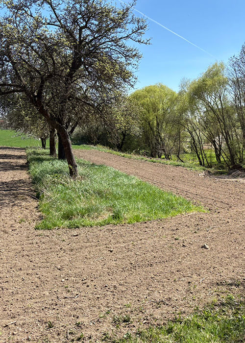
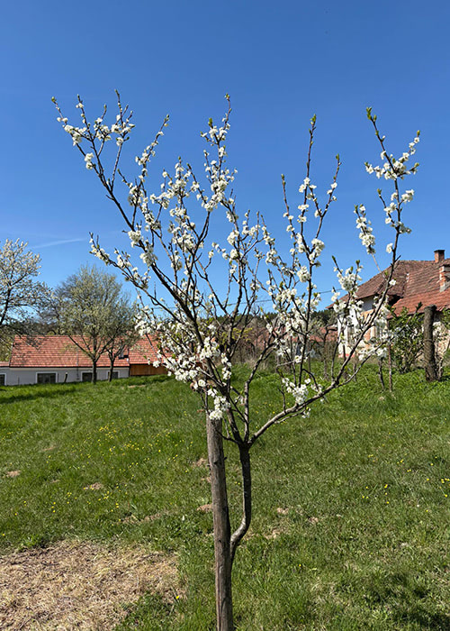
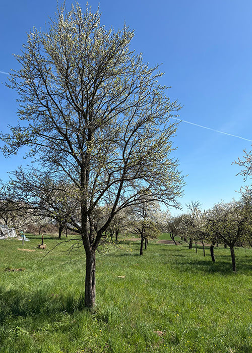
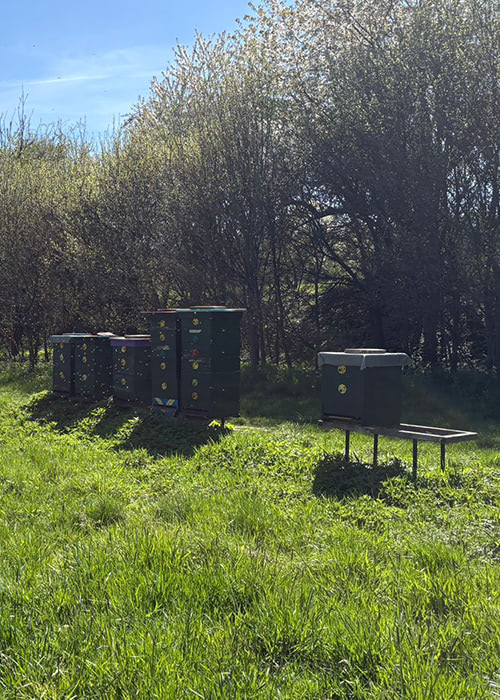
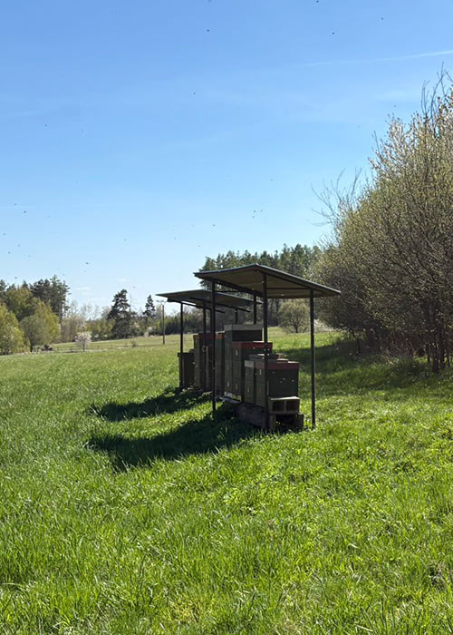
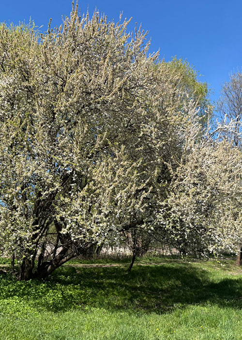
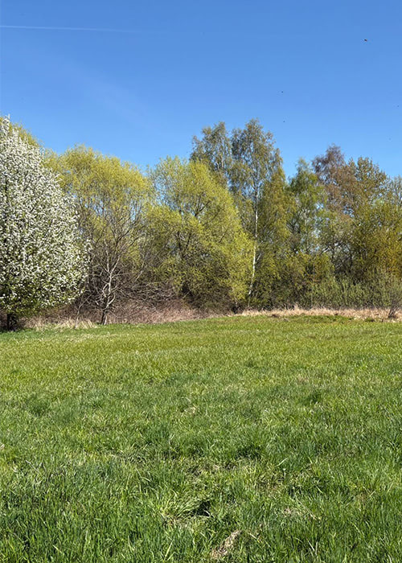
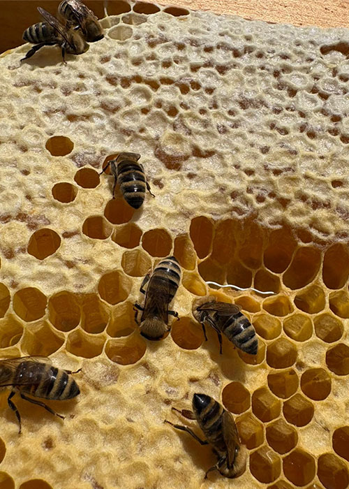
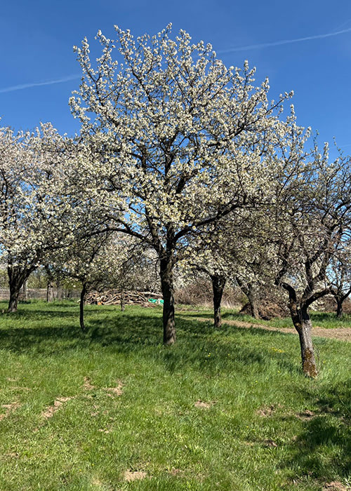
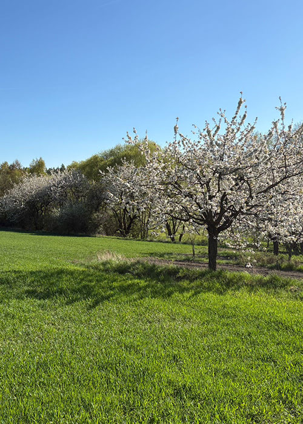
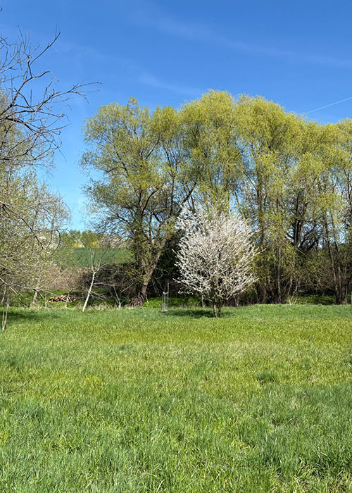
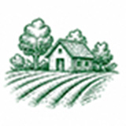
Lokální produkce
Med získáváme výhradně z vlastních včelstev chovaných v okolí Statku Zhoř. Díky vlastníprodukci máme plnou kontrolu nad kvalitou, původem i způsobem zpracování.
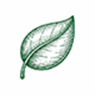
100% přírodní
Náš med neobsahuje žádné umělé přísady, konzervanty ani chemické úpravy. Zpracováváme jej šetrně tak, aby si zachoval své přirozené složení a své nejcennější charakteristické vlastnosti.
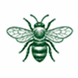
Spokojené včely
Včelstva vedeme s důrazem na jejich přirozený vývoj, zdraví a stabilní podmínky chovu. Respekt k biologickým potřebám včel je pro nás základem kvalitní produkce.
Pečlivá práce
Med stáčíme ručně a za nízkých teplot, aby byly zachovány důležité enzymy, vitaminy, minerální látky i přirozené aroma.
Lahodná chuť
Kvalitní snůška, šetrné zpracování a důsledná péče o včelstva se promítají do vyvážené chuti a vysoké kvality každé sklenice medu.
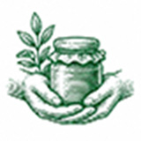
Ruční výroba s respektem k přírodě
Náš med pochází z čistého prostředí Statku Zhoř, kde navazujeme na tradiční principy českého včelařství a současně dbáme na odborný a šetrný přístup ke zpracování. Med neprochází průmyslovými úpravami ani nadměrným zahříváním, díky čemuž si zachovává své přirozené enzymatické složení, obsah minerálních látek i charakteristickou chuť a vůni danou místní krajinou.
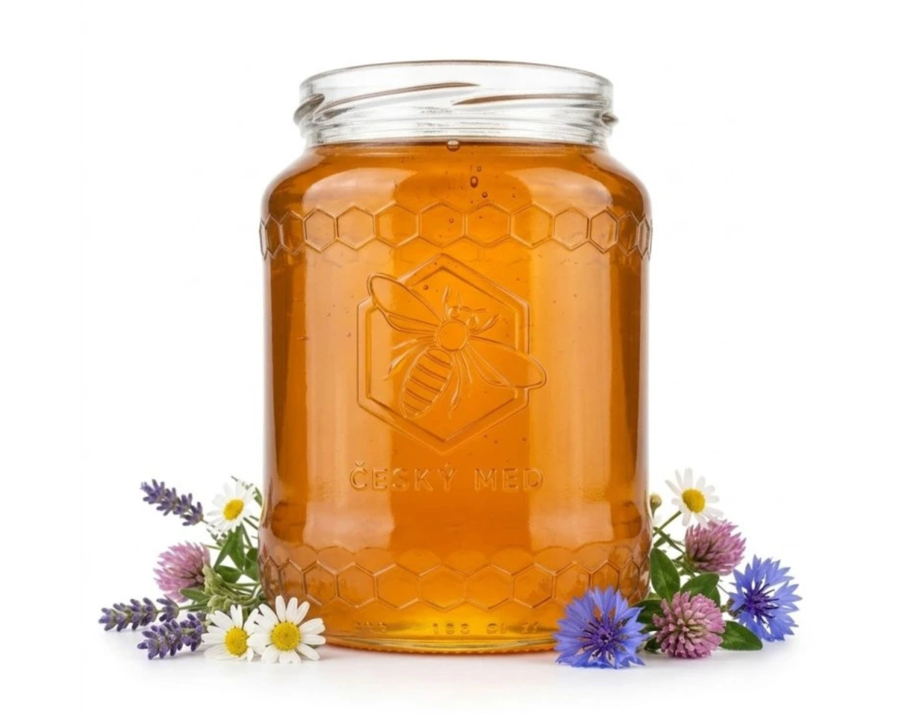
Od květiny až do sklenice
Každá kapka medu je výsledkem přirozené činnosti našich včelstev a pečlivého včelařského zpracování. Květový med ze Zhoře vyniká vyváženým chuťovým profilem, charakteristickým aroma místních luk a světlou zlatavou barvou typickou pro kvalitní nektarové medy z regionální snůšky. Díky bohaté medovicové snůšce v okolních lesích nabízíme také smíšený a medovicový med, které se vyznačují výraznější chutí, tmavším odstínem a vyšším obsahem přírodních minerálních látek. Medovicové medy mají plnější aroma a jsou ceněné pro svůj charakteristický původ z lesního prostředí.
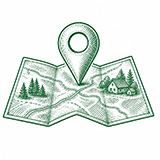
Kde nás najdete
Naše včelstva mají ty nejlepší podmínky v čisté přírodě v okolí Zhoře. Díky ideální poloze dodáváme náš med nejen místním, ale i do širšího okolí.
Pravidelně zásobujeme zákazníky na trase Brno, Prostějov, Určice a samozřejmě přímo v obci Zhoř. Zakládáme si na lokální distribuci, protože věříme, že nejlepší potraviny pocházejí z vašeho vlastního regionu.